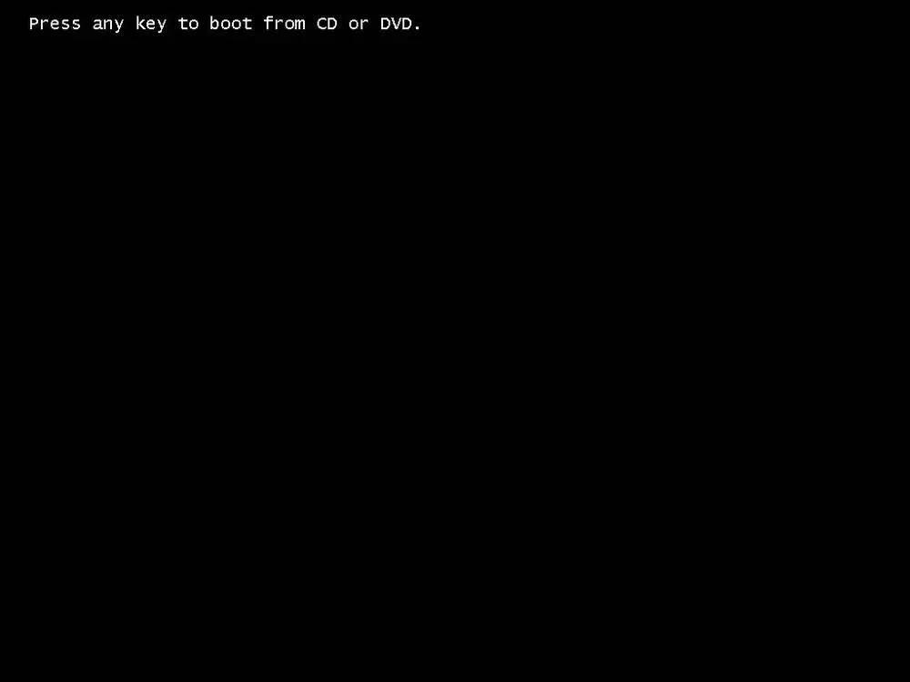
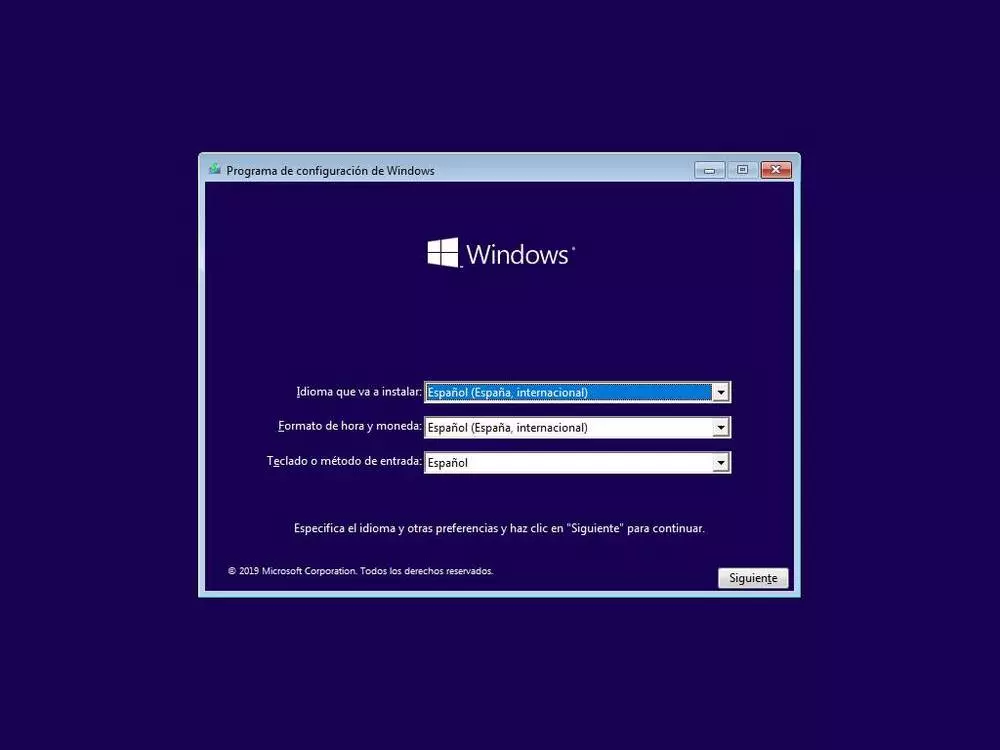
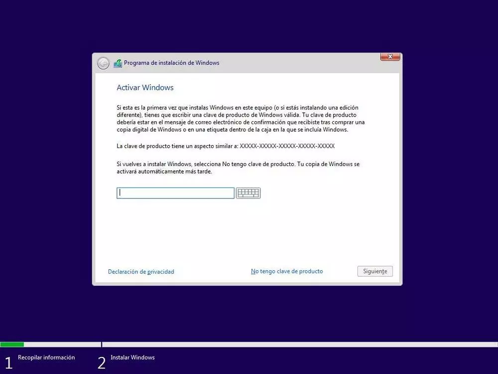
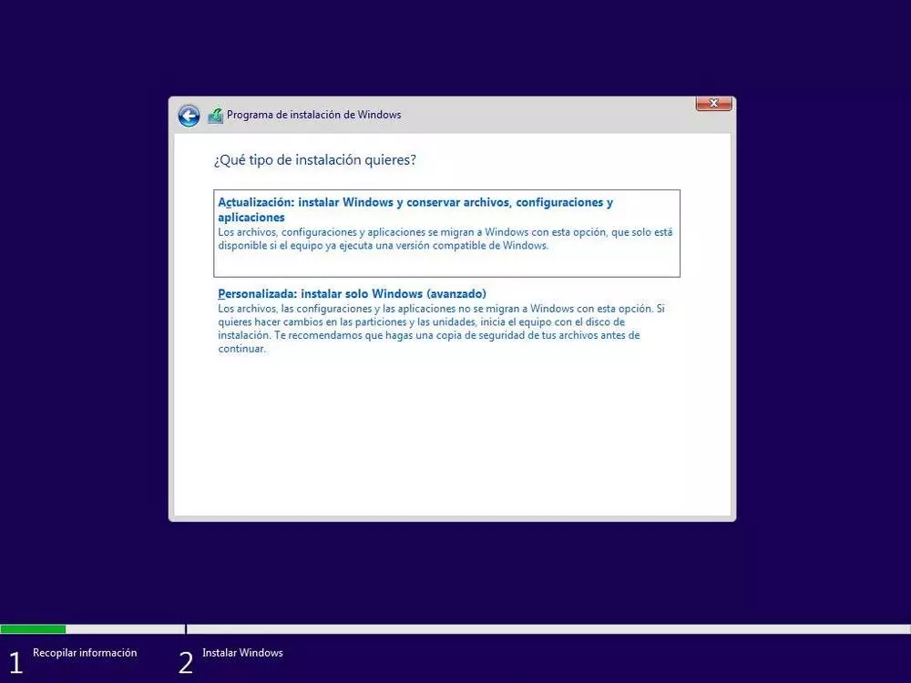
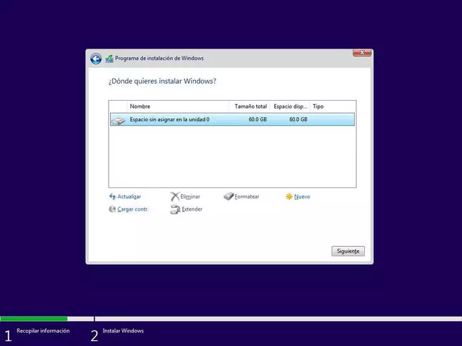
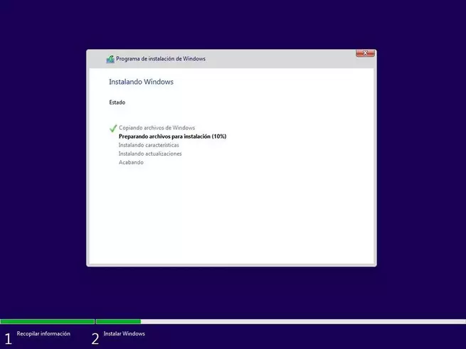
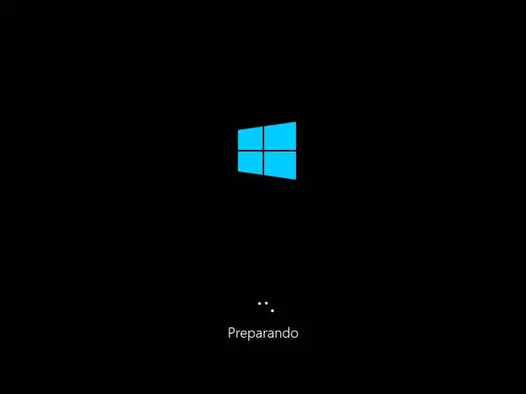

Preparar el PC y configurar la BIOS
Una vez que ya tenemos la memoria USB con Windows 10 instalada en nuestro ordenador, el siguiente paso será preparar el ordenador para arrancar desde ella. Cada placa base y cada modelo de ordenador es un mundo, por lo que no hay una forma universal de hacerlo.
Para entrar la BIOS o UEFI de un ordenador lo que debemos hacer es encenderlo y, durante el arranque, pulsar las teclas F para poder entrar a este menú. También puede ser que nuestro PC entre a este menú con la tecla SUPR, depende de modelos.
Una vez dentro, debemos buscar el apartado de boot y asegurarnos de que la memoria USB con Windows 10 está configurada como arranque principal.
Ya que estamos en la BIOS y vamos a instalar Windows 10 desde cero, podemos aprovechar y activar el Secure Boot y asegurarnos de que está configurado el PC en modo UEFI. De esta manera podremos aprovechar al máximo el PC y asegurarnos de que todo nuestro PC se ejecuta de forma segura. Este paso no es obligatorio (ya que Windows 10 funciona bien en modo Legacy Bios), pero es recomendable para tener mayor seguridad, menos problemas al actualizar, y poder dar el salto a Windows 11.
Estas opciones no se pueden (o, mejor dicho, no se deben) cambiar una vez Windows está instalado. De ser así, no servirían de nada.
Cómo instalar Windows 10 paso a paso
Lo siguiente que debemos hacer es introducir la memoria USB en el ordenador apagado y encenderlo. Salvo que tengamos la BIOS/UEFI de nuestro ordenador configurada para arrancar primero desde dispositivos extraíbles como memorias USB, debemos pulsar durante el arranque la tecla F8 repetidas veces (o equivalente, según modelos de placas base) para que nos aparezca el menú de Boot y seleccionar en él nuestro USB con Windows 10 para instalar.
Cuando el sistema intente arrancar desde la memoria USB, lo primero que veremos será un mensaje que nos pedirá que pulsemos una tecla cualquiera para empezar con la instalación de Windows 10.

Pulsamos cualquier tecla, y empezará una ventana de carga durante la cual se cargará en la memoria todo lo necesario para arrancar el asistente de instalación.

Tras esta ventana de carga, que dura unos segundos, veremos la ventana inicial del asistente de instalación de Windows 10.

En esta ventana debemos configurar el idioma de nuestro sistema operativo, el formato de hora y moneda y el tipo de teclado que vamos a utilizar.
 Pulsamos sobre «Siguiente» y en la nueva ventana que aparece pulsaremos sobre «Instalar ahora«.
Pulsamos sobre «Siguiente» y en la nueva ventana que aparece pulsaremos sobre «Instalar ahora«.
El siguiente paso que nos pedirá el asistente será introducir el número de licencia de nuestro Windows. Si la licencia se encuentra grabada en la BIOS/UEFI de nuestro ordenador, esta ventana no la veremos. De lo contrario, si la tenemos a mano podemos introducirla o, si no, pulsamos sobre «No tengo clave de producto» para continuar sin dicha licencia.

A continuación, el asistente nos preguntará por la versión de Windows 10 que queremos instalar. Debemos elegir la que corresponda a nuestra licencia para evitar problemas.

Pulsamos de nuevo sobre Siguiente y aparecerán los términos de licencia, los cuales aceptaremos para continuar.

La siguiente ventana es una de las más importantes. En ella elegiremos el tipo de instalación que queremos:
Si queremos actualizar Windows y no perder los datos ni aplicaciones, elegiremos «Actualización».
Para una instalación limpia, elegiremos «Personalizada».

En nuestro caso seleccionamos la segunda opción, personalizada, y veremos un nuevo paso en el asistente donde elegir la partición del disco duro donde instalaremos Windows.
Si queremos crear particiones, pulsaremos sobre «Nuevo» y configuraremos el espacio que queremos utilizar para nuestro Windows. Si no hacemos nada, el asistente utilizará automáticamente todo el espacio para instalar Windows (y crear la partición de recuperación de 500 MB). En la segunda imagen podemos ver las particiones que crea por defecto Windows para poder arrancar y funcionar.

Después de formatear para instalar Windows 10, pulsamos sobre «Siguiente» y comenzará el proceso de instalación. Durante este proceso se llevarán a cabo una serie de tareas:
Copia de todos los archivos de instalación al disco duro.
Preparar los archivos para la instalación.
Instalar características de Windows.
Instalar actualizaciones incluidas en el medio se instalación.
Finalizar instalación.

Debemos esperar a que finalice el proceso de instalación. Durante el cual, el ordenador se reiniciará varias veces y, además, veremos distintas fases, tanto del asistente de instalación como de la configuración inicial de nuestro Windows 10.

Tras los reinicios, Windows 10 ya estará instalado, aunque antes de poder usarlo tendremos que completar el siguiente asistente de configuración inicial.